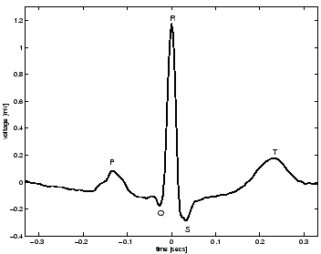

Next: ECG morphology
Up: A dynamical model for
Previous: A dynamical model for
The
electrocardiogram (ECG) is a time-varying signal reflecting the
ionic current flow which causes the cardiac fibres to contract and
subsequently relax.
The surface ECG is obtained by recording the potential difference between
two electrodes placed on the surface of the skin.
A single normal cycle of the ECG represents the successive atrial
depolarisation/repolarisation and ventricular depolarisation/repolarisation
which occurs with every heart beat. These can be approximately associated
with the peaks and troughs of the ECG waveform labelled P,Q,R,S and T as
shown in Fig. 1.
Extracting useful clinical information from the real (noisy) ECG requires
reliable signal processing techniques [1].
These include R-peak detection [2,3],
QT-interval detection [4]
and the derivation of heart rate and respiration rate
from the ECG [5,6].
The RR-interval is the time between
successive R-peaks, the inverse of this time interval gives the
instantaneous heart rate.
A series of RR-intervals is known as a RR tachogram and variability of
these RR-intervals reveals important information about the physiological state
of the subject [7].
At present, new biomedical signal processing algorithms are usually evaluated
by applying them to ECGs in a large database such as the Physionet
database [8].
While this gives the operator an indication of the accuracy of a given
algorithm when applied to real data, it is difficult to infer how the
performance would vary in different clinical settings with a range of
noise levels and sampling frequencies.
Having access to realistic artificial ECG signals may
facilitate this evaluation.
Figure 1:
Morphology of a mean PQRST-complex of an ECG recorded
from a normal human.
|  |
This paper presents a model for generating a synthetic ECG signal with
realistic PQRST morphology and prescribed heart rate dynamics.
The aim of this model is to provide a
standard realistic ECG signal with known characteristics,
which can be generated with specific statistics
such as the mean and standard deviation of the heart rate
and frequency-domain characteristics of heart rate variability (HRV),
such as the LF/HF ratio, defined as the ratio of power between 0.015 and
0.15 Hz and 0.15 and 0.4 Hz in the RR tachogram [7].
By generating a signal which represents a typical human ECG, this
facilitates a comparison of different signal processing techniques.
A synthetic ECG can be generated with different sampling frequencies and
different noise levels in order to establish the performance of
a given technique. This performance can be presented, for example,
as the number of true positives, false positives, true negatives and false
negatives for each test. Such performance assessment could be used as
a ``standard'' and would enable clinicians to ascertain which biomedical
signal processing techniques were best for a given application.
The layout of this paper is as follows; section II
summarises the physiological mechanisms underlying the cardiac cycle and
reviews the morphological variability which is reflected in the ECG signal.
A brief review of HRV is presented in
section III. The dynamical model is introduced in
section IV and investigated in section V.
Section VI concludes and discusses extensions to
the model which may be useful for simulating specific disorders.
Next: ECG morphology
Up: A dynamical model for
Previous: A dynamical model for
2003-10-08